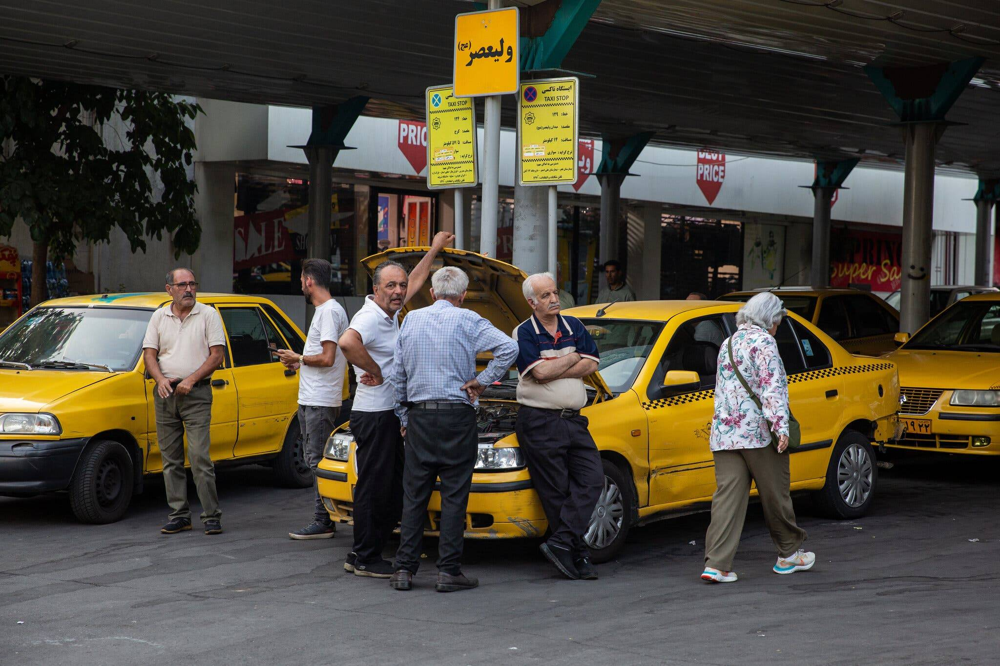
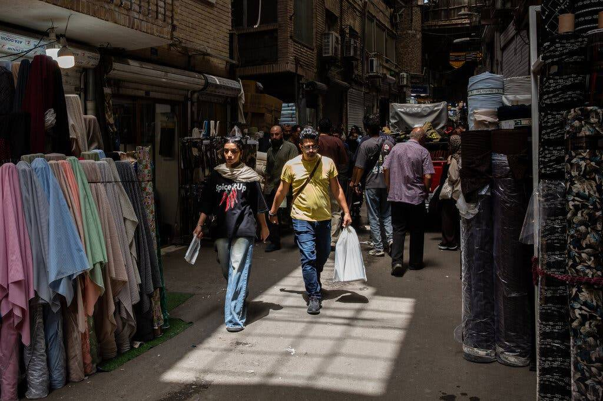
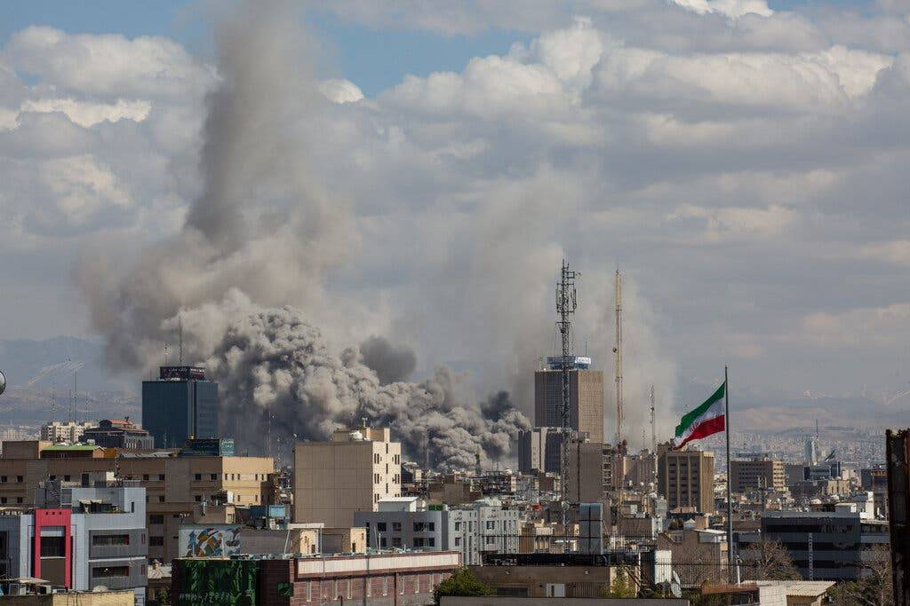
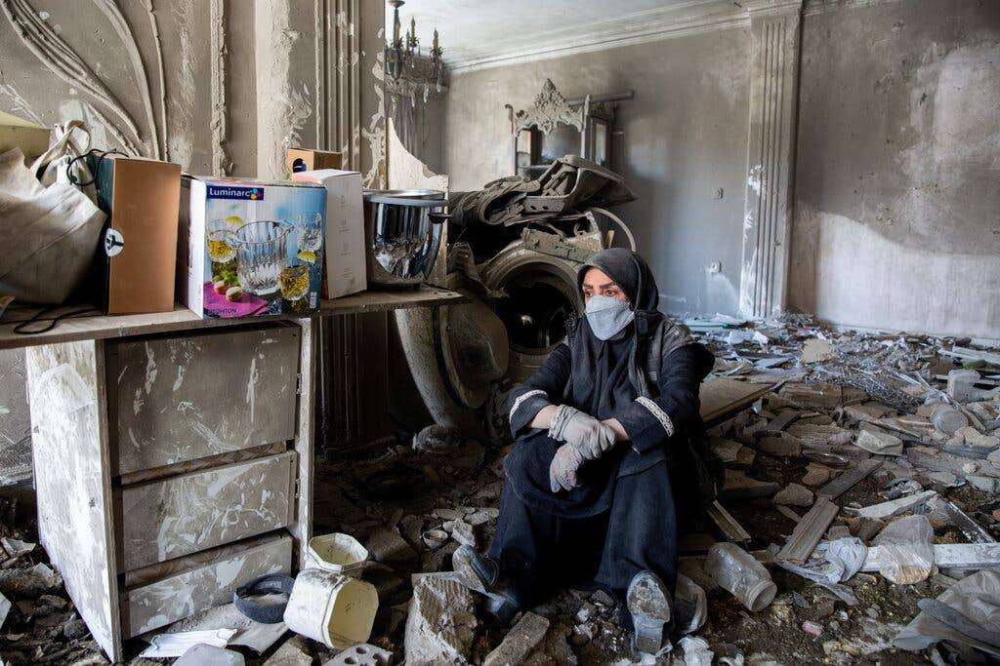
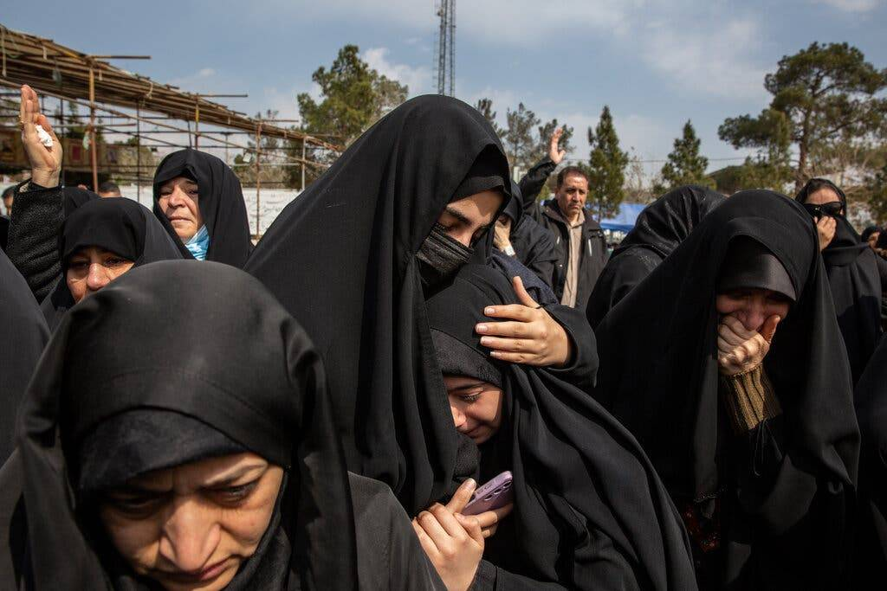
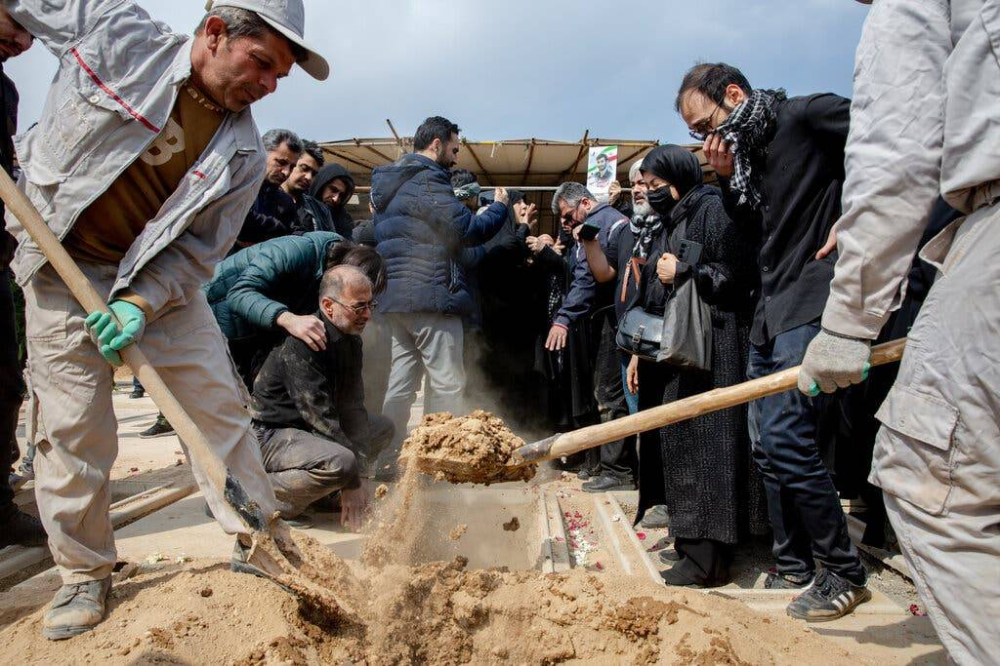
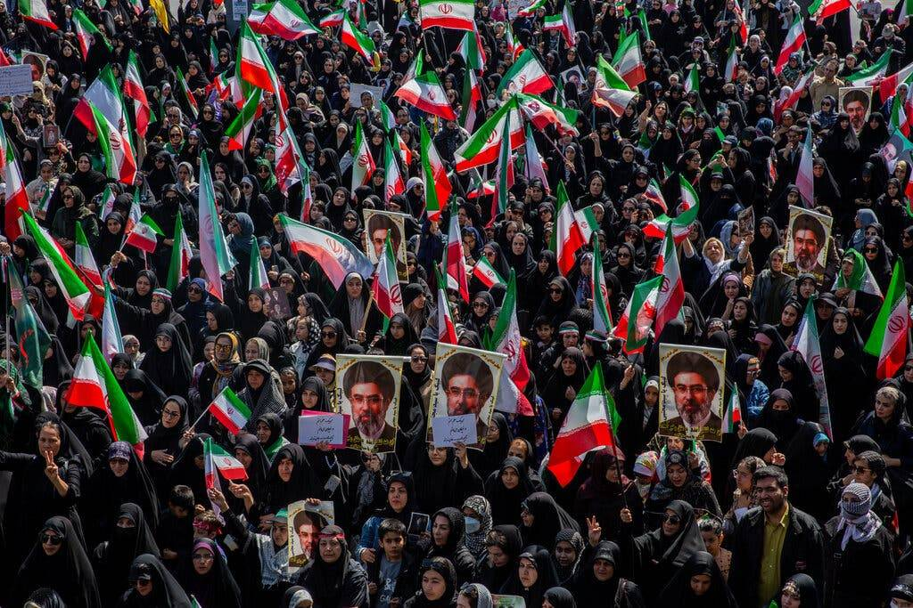
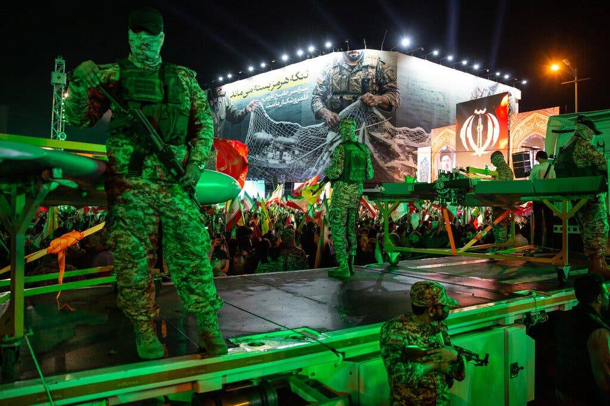
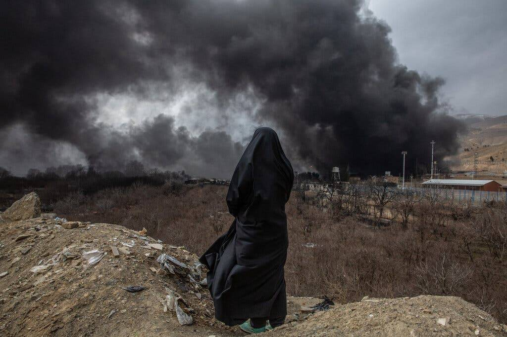

It was supposed to be quick.
Still, six months after the U.S. and Israel launched massive airstrikes on Iran, the conflict drags on. The Trump administration has replaced its military war with an economic one, but the result is likely to be no different, analysts said, with a lack of American clarity about goals, a decline in American credibility and a strategic defeat.
One thing remains constant, however. The ordinary people of Iran are bearing the brunt of the war, victims of both the United States and their own leaders.
On the first day of the war, Feb. 28, President Trump promised Iranians that "the hour of your freedom is at hand." Six months later, his administration is trying to impoverish them further, hoping against hope that they will revolt against a repressive, militarized regime and overthrow it.
The Iranian leadership, increasingly dominated by military men, sees its own survival as the nation's, and it considers the sacrifices of ordinary Iranians as a necessary act of patriotism and even martyrdom. It has been ever more ruthless in stamping out the slightest signs of dissent.


It is hard to dress up what has clearly been an American failure to bend Iran to its will, despite the might of the combined American and Israeli militaries. Not only has the Islamic Republic survived, but it effectively controls the Strait of Hormuz. It has strengthened its influence in the region, with even the countries it was bombing a few months ago trying to reinvigorate ties with Iran.
"The war has failed to deliver U.S. objectives," said Sanam Vakil, the director of the Middle East and North Africa program at Chatham House.
Suzanne Maloney, an Iran expert and head of foreign policy at the Brookings Institution, judged the war a failure. "We did a lot of damage to Iran, but they have come out stronger than before," she said. Iran's neighbors have decided they must find a modus operandi with an Islamic Republic that is not going away.
American credibility among allies has suffered along with Mr. Trump's own reputation for avoiding costly, interminable wars in the Middle East and promoting "affordability" at home. And it has made his promise to liberate ordinary Iranians look hollow.
"This war has really overtaken the Trump presidency," Ms. Maloney said.
The Regime Survives
"Operation Epic Fury" began with a joint American-Israeli surprise attack on Iran, which killed the supreme leader, Ayatollah Ali Khamenei, and many of his officials, while badly wounding his son and now successor, Mojtaba.
Weeks of intense bombing destroyed much of Iran's air force and navy and badly damaged its missile program. But the population did not rise up and the leadership did not fracture.


Iran's military restored many of its missile launchers and attacked key American allies in the region as well as American bases, which were inadequately defended. It effectively shut down the Strait of Hormuz and caused global economic disruption.
Several thousand Iranians, including children, have died — the numbers are hard to verify — and 18 American service members.
The original "Operation Epic Fury" has been replaced with what Treasury Secretary Scott Bessent on Monday announced as "Operation Economic Outcast," designed to isolate Iran further and crash its badly damaged economy.
"This is a sustained campaign to collapse every last option for Iran," Mr. Bessent said. "The campaign we begin today will gather force with every day that follows, and it will not end until this regime stands alone."
Despite rhetorical flourishes about D-Day and the fall of the Berlin Wall, Mr. Bessent did not indicate how long this economic war will last, what instruments it will use or what it aims to achieve.
Is the American goal once again the collapse of the regime? Or to force the opening of the Strait of Hormuz? Or to bring a more desperate Iran back to the negotiating table to reach a sustainable settlement of both the strait and Iran's nuclear program?
"There is no clear articulation of America's goals," said Esfandyar Batmanghelidj of the Bourse & Bazaar Foundation, a research organization based in London. "But if you don't define behavior change, sanctions as coercion fail."


Iran, already the target of many thousands of sanctions, is considered unlikely to surrender because of a few more. More likely, analysts said, is that the country will respond in time by escalating its attacks on ships in the Persian Gulf and on American allies, which could produce another round of American bombing.
Washington is betting it can achieve through intensified economic strangulation what six months of war could not, said Sina Toossi of the Center for International Policy, a Washington think tank.
Washington is trying to do that by demanding international compliance even as its relations with much of the world grow more coercive and transactional, with more countries choosing to ignore Mr. Trump's dictates.
"The capacity to hurt Iran is clear," Mr. Toossi said. "The path from pain to capitulation or collapse is not."
A Risky Stalemate
With American objectives unclear, the confusion is real in Tehran, too, said Ali Vaez, the Iran project director for the International Crisis Group. They will wonder, he said: "Does the U.S. want to achieve collapse, capitulation or compromise?"
Given that Iran's leaders see the effort to strangle them as another form of warfare, Mr. Vaez said, the new American strategy has two risks. If it fails, the only option left is to return to military escalation. And if it works, it may lead Iran to escalate to break the U.S. naval blockade.
"In either case, it won't produce what the administration seems to want, which is to use sanctions as an alternative to war," he said. "It's more likely to be a prelude to another round of military warfare."
Iran's public-facing leadership, including President Masoud Pezeshkian and Mohammad Bagher Ghalibaf, the parliamentary speaker, has been blunt about the economic imperatives to ending the war. They have warned of the consequences of hungry people and economic collapse.
They nonetheless take a consistent line on negotiating with Washington, insisting on a return at minimum to the June Memorandum of Understanding, which Mr. Trump signed but now says is "over." They also continue to negotiate with Oman about managing the strait in a way Washington is unlikely to accept.
But no matter how much Iran concedes, there is a widespread mistrust that Mr. Trump will deliver on economic benefits and sanction relief. Despite the dire economy, the leadership appears united on retaining control of the strait.
The supreme leader, Ayatollah Mojtaba Khamenei, is seen as closer to the Islamic Revolutionary Guards Corps and less risk-averse than his father.


Some wonder if Mojtaba is even alive; he has not been seen in public and the last communiqué from his office was on Aug. 9.
For the moment, the situation is relatively static, a sort of phony war, with neither side firing at each other and relatively loose blockades of the strait in both directions, allowing some oil to escape.
The new strategy of enhanced economic strangulation has the benefit of being gradual and hard to monitor, lowering the temperature on the conflict, which may help Mr. Trump and the Republicans in the run-up to November's midterm elections, while promising that victory, really, is just around the corner.
But the stalemate is also risky, said Ellie Geranmayeh, an Iran expert with the European Council on Foreign Relations. "There is an increasing view in the White House that you can't deal with this Islamic Republic," she said. "It's a dangerous moment, with both Tehran and D.C. concluding that no deal is possible with the other."
Jeremy Shapiro, a former State Department official now at the European Council on Foreign Relations, remains puzzled why Mr. Trump has not taken any of the available offramps to ending an enormously unpopular war at home. By pushing even more economic sanctions, he said, Trump officials "are pretending they're still fighting instead of pretending that they've won" — or admitting that they've lost.
As ever, Iran's leadership won't pay the cost, Mr. Shapiro said, it will be its people that do.
